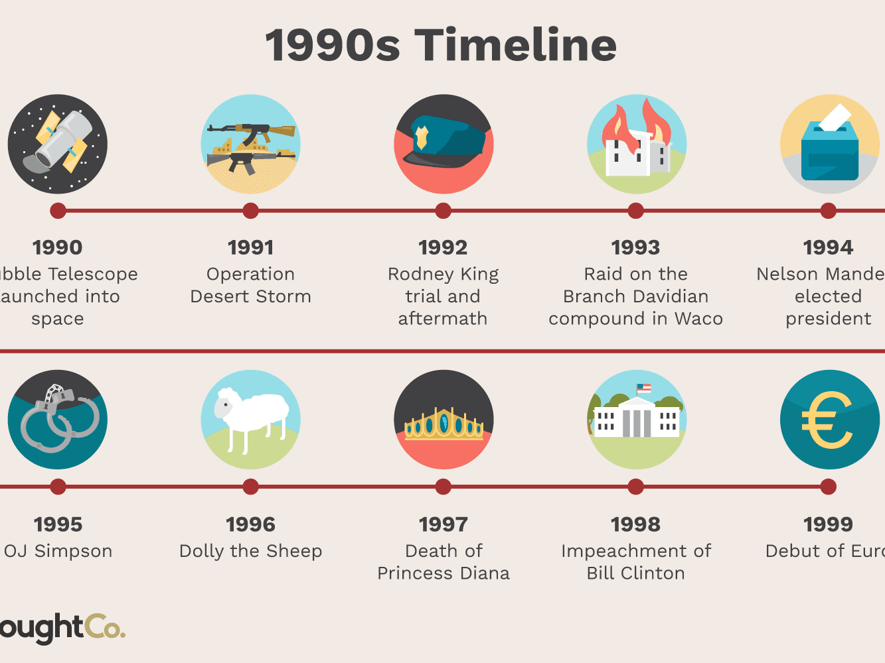

Below is a timeline spanning roughly from 1920 to 2020, encapsulating the growth of the fashion industry, the waste industry, pollution, fast fashion, and their intersections.
Honestly, I don't know how to input a timeline yet and I am having trouble finding something to do the placeholder version of it, so here! I'm going to insert a photo of the kind of timeline layout I'm hoping to achieve.
Get in touch with me: akk7xq@umsystem.edu
Here's more reporting on the subject: